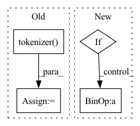

Pattern ID :22112

Before Change
// Only for saving
if self.use_faster_tokenizer:
input_ids, token_type_ids = self.tokenizer(
text=input_ids,
text_pair=token_type_ids,
max_seq_len=self.max_seq_len,
pad_to_max_seq_len=self.pad_to_max_seq_len,
)
if attention_mask is None:
attention_mask = paddle.unsqueeze(
(input_ids == self.pad_token_id).astype(self.pooler.dense.weight.dtype) * -1e4, axis=[1, 2]
)
After Change
(input_ids == self.pad_token_id).astype(self.pooler.dense.weight.dtype) * -1e4, axis=[1, 2]
)
else:
if attention_mask.ndim == 2:
// attention_mask [batch_size, sequence_length] -> [batch_size, 1, 1, sequence_length]
attention_mask = attention_mask.unsqueeze(axis=[1, 2]).astype(paddle.get_default_dtype())
attention_mask = (1.0 - attention_mask) * -1e4
embedding_output = self.embeddings(
input_ids=input_ids, position_ids=position_ids, token_type_ids=token_type_ids
In pattern: SUPERPATTERN
Frequency: 3
Non-data size: 4
Instances
Fragment ID: 70056844
Project Name: paddlepaddle/paddlenlp
Commit Name: 17d066448b8d97d719cc56c2191a6c02fd41ec3c
Time: 2023-04-04
Author: 709153940@qq.com
File Name: paddlenlp/transformers/ppminilm/modeling.py
M Class Name: PPMiniLMModel
N Class Name: PPMiniLMModel
M Method Name: forward(5)
N Method Name: forward(5)
M Parent Class: PPMiniLMPretrainedModel
N Parent Class: PPMiniLMPretrainedModel
M File Name: paddlenlp/transformers/ppminilm/modeling.py
N File Name: paddlenlp/transformers/ppminilm/modeling.py
M Start Line: 381
M End Line: 388
N Start Line: 230
N End Line: 235
'>
Before Change
if top_k is None:
top_k = self.top_k
features = self.tokenizer(
[query for doc in documents],
[doc.content for doc in documents],
max_seq_len=self.max_seq_len,
pad_to_max_seq_len=True,
truncation_strategy="longest_first",
)
tensors = {k: paddle.to_tensor(v) for (k, v) in features.items()}
with paddle.no_grad():
if self.use_en:
After Change
top_k = self.top_k
datasets = []
for doc in documents:
if self.embed_title:
datasets.append([query, doc.meta["name"] + doc.content])
else:
datasets.append([query, doc.content])
outputs = self.transformer_model(datasets)
'>
Fragment ID: 70056842
Project Name: paddlepaddle/paddlenlp
Commit Name: 35be940d8e29d002d830da63c5923f63b0ec4d5d
Time: 2023-03-06
Author: w5688414@gmail.com
File Name: pipelines/pipelines/nodes/ranker/ernie_ranker.py
M Class Name: ErnieRanker
N Class Name: ErnieRanker
M Method Name: predict(4)
N Method Name: predict(4)
M Parent Class: BaseRanker
N Parent Class: BaseRanker
M File Name: pipelines/pipelines/nodes/ranker/ernie_ranker.py
N File Name: pipelines/pipelines/nodes/ranker/ernie_ranker.py
M Start Line: 98
M End Line: 115
N Start Line: 97
N End Line: 104
'>
Before Change
preds = []
for cur_queries, cur_docs in batches:
features = self.tokenizer(
cur_queries,
[doc.content for doc in cur_docs],
max_seq_len=self.max_seq_len,
pad_to_max_seq_len=True,
truncation_strategy="longest_first",
)
tensors = {k: paddle.to_tensor(v) for (k, v) in features.items()}
with paddle.no_grad():
if self.use_en:
After Change
for cur_queries, cur_docs in batches:
datasets = []
for query, doc in zip(cur_queries, cur_docs):
if self.embed_title:
datasets.append([query, doc.meta["name"] + doc.content])
else:
datasets.append([query, doc.content])
outputs = self.transformer_model(datasets)
'>
Fragment ID: 70056839
Project Name: paddlepaddle/paddlenlp
Commit Name: 35be940d8e29d002d830da63c5923f63b0ec4d5d
Time: 2023-03-06
Author: w5688414@gmail.com
File Name: pipelines/pipelines/nodes/ranker/ernie_ranker.py
M Class Name: ErnieRanker
N Class Name: ErnieRanker
M Method Name: predict_batch(5)
N Method Name: predict_batch(5)
M Parent Class: BaseRanker
N Parent Class: BaseRanker
M File Name: pipelines/pipelines/nodes/ranker/ernie_ranker.py
N File Name: pipelines/pipelines/nodes/ranker/ernie_ranker.py
M Start Line: 159
M End Line: 177
N Start Line: 150
N End Line: 159